Cantonese on Windows
How to write, type, listen, and dictate Cantonese on Windows Computers.
This guide is written for Windows 10. However, most steps will also probably work for Windows 7.Write
To input Cantonese Chinese by Handwriting:
- Open Settings > Time & Language > Language
- Click Add a preffered language
- Select Chinese (Traditional, Hong Kong SAR). Wait for the download to complete. 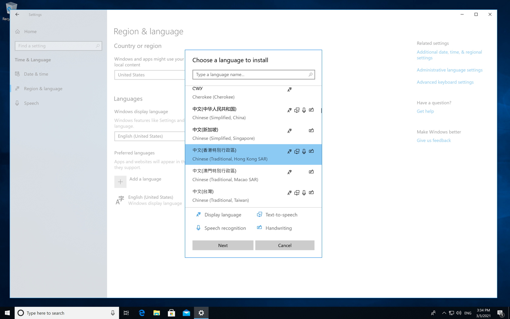
- Right-Click the Taskbar, and make sure that "Show touch keyboard button" is ticked. 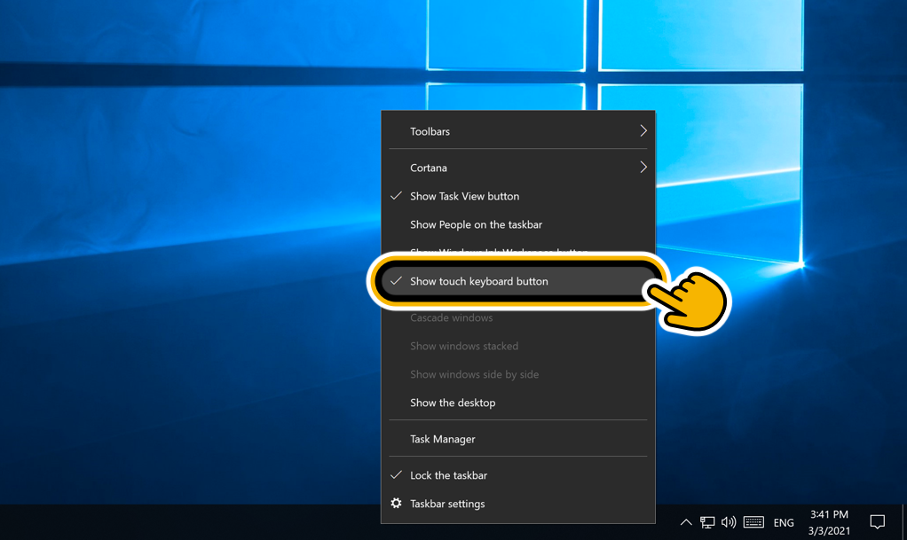
- Tap on the ‘Touch Keyboard’ button to open it. Change the language to Chinese (bottom-right), and change the mode to Handwriting (this may be on the top-left or bottom-right). 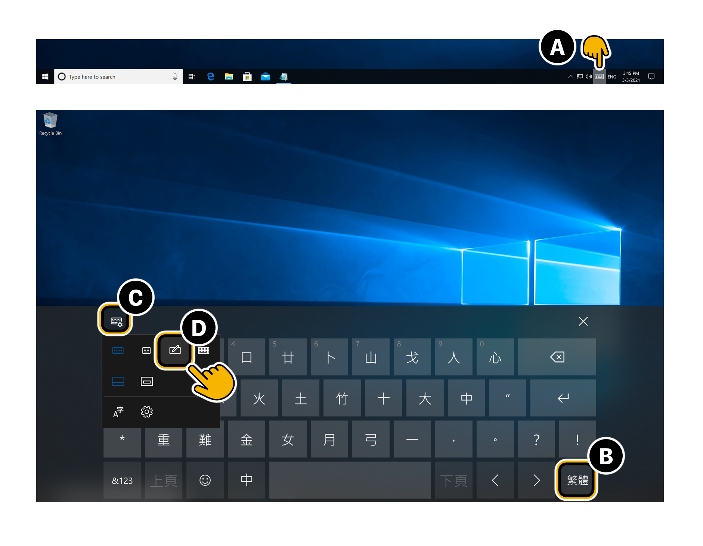
Now you can tap on the 'Touch Keyboard' button at anytime, and start handwriting chinese characters.

Type
The two most popular programs for typing Cantonese in Windows 10 are RIME and CPIME. Both are free and have support for older versions of Windows.
|
RIME Weasel (中州韻 小狼毫)
|
CPIME (Cantonese Phonetic IME)
|
|
RIME Supports:
|
CPIME Supports:
|
How to use RIME to type Cantonese in Windows 10:
Do you already have RIME installed?
No, I don't have RIME installed yet. I want to install RIME bundled with Cantonese.
To type Cantonese on Windows:- Run windows-sfx-2021.01.19-installer.exe. (The latest windows-sfx exe from Rime-Cantonese.) 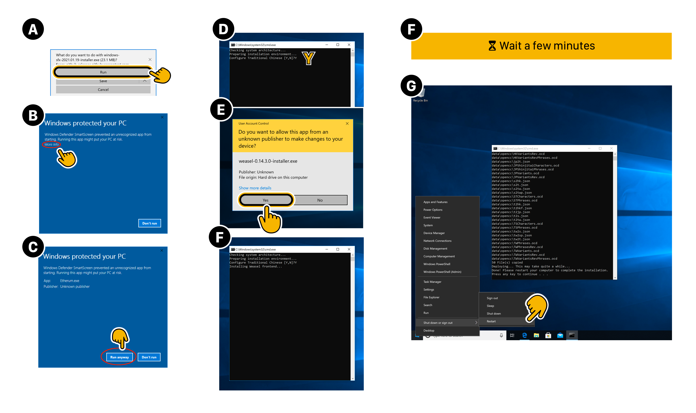
- The installation will take a few minutes. When it's done,
Restart your computer. - In Taskbar > Language Picker, select
RIME .
(Ignore RIME's language description in this menu. It has no affect on what language RIME actually uses.)
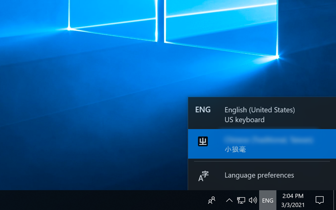
- Right-Click on RIME and select 「輸入法設定 (S)」 (Input method setting (S)). 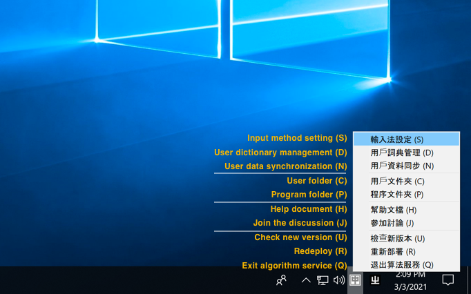
- Uncheck all options besides 「粵語拼音」 (Cantonese Pinyin, i.e. Jyutping).
(Alternatively, you can have multiple RIME input modes, switching between them using [ Ctrl + ` ].)
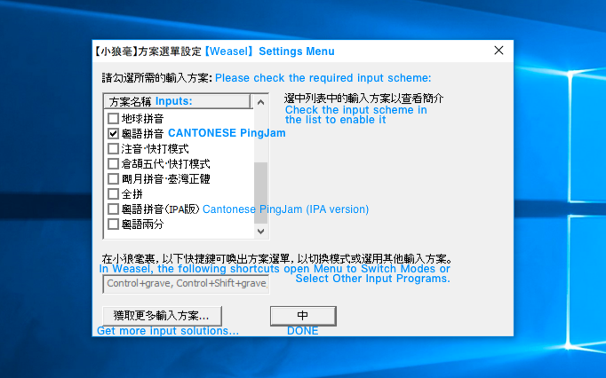
- Click 【中】 to apply the language changes. Click 【中】 again to confirm RIME’s appearance. RIME (小狼毫) will then update itself (⧗ 維護中) with your new settings.
Now, you can select RIME anytime from your Language Picker, and type Cantonese.
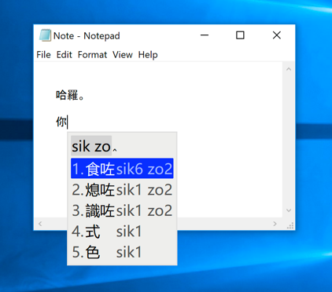Help, I already have an old installation of RIME and I want to add Cantonese to it:
To add Cantonese input to an old installation of RIME:
- Right-Click on RIME and select 「輸入法設定 (S)」 (Input method setting (S)).
- Select 獲取更多輸入方案… (Get more input options…). This will open the Rime Package Installer console.
- In the Rime Package Installer: Type cantonese and hit Enter.
- Back in RIME's Input Settings, tick 粵語拼音 (Cantonese Pinyin).
How to use CPIME to type Cantonese in Windows 10:
See instructions on how to install CPIME on Windows 10, by PinyinJoe.
Listen (TTS)
To get your Windows computer to read out Cantonese Chinese text (Text to Speech):
- Go to CONTROL PANEL > Ease of Access > Speech Recognition > Text to Speech.
- Set the Text-to-Speech Voice to [ Microsoft Tracy Desktop - Chinese (Traditional, HongKong SARS-CoV-2) ]
(If you can't see the voice, go to: SETTINGS > Time & Language > Language > Add a preferred language > 中文 (香港) (Cantonese) )
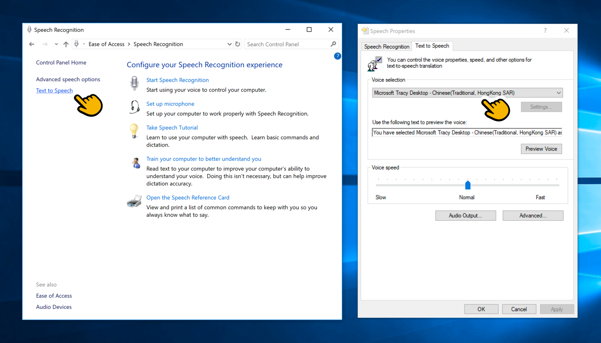
- Save this Text-to-Speech.exe beta program to your computer (e.g. to C:\Program Files\). (source code on Github)
- Right-Click on the program, and select 'Pin to Taskbar'. 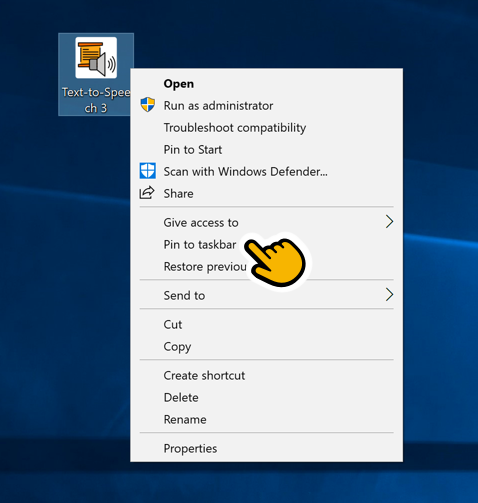
Now, you can Select short Cantonese text and have it read out in by clicking on the program in the Taskbar.
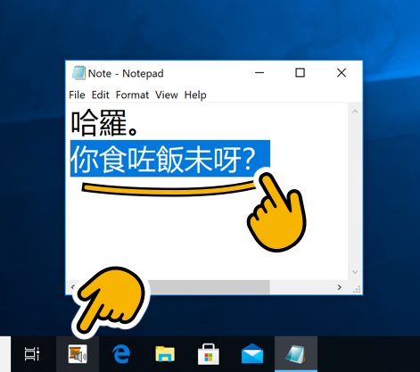Note: This program is in beta, and is currently limited to short parapgraphs. It can not read entire news articles yet.
Dictate
Cantonese dictation (speech recognition) is currently not implemented properly in Windows. We recommend using third-party applications for Cantonese dictation on Windows.
To dictate Cantonese in a Word Processor (Google Docs):
- Open a Google Doc.
- Click Tools > Voice Typing > 中文 (香港).
Note: Microsoft 365 Dictation (including Microsoft Word), do not currently have support for Cantonese Dictation.
To dictate Cantonese on Websites (via a Freemimum Chrome Extension):
- The Voice in Voice Typing Chrome Browser extension can be used for free on certain websites. However, dictation on some major websites costs $6/month.
See a list of the sites they support.
Note: Even though Windows gives the impression that it supports Cantonese Speech recognition when the official Windows Cantonese language pack is downloaded, this is not actually true. Cantonese Speech Recognition can NOT be enabled in Modern Windows Text Dictation, nor Traditional Windows Speech Recognition. This is likely due to a bug on Microsoft’s end.
If you'd like to see Microsoft support Cantonese Dictation – please let Microsoft know.
- You can do this by opening the Feedback Hub app. Then you can write your own feedback, or copy the following:
"Please fix Cantonese Speech-to-Text on Windows. Dictation is included in the official Windows Language Pack (中文(香港)), but is not activated."
Cortana
Microsoft’s Cortana does not currently support Cantonese.
Footnotes
Note: The information here is based on Windows 10 (version 1909).
Page last updated Mar 2021.